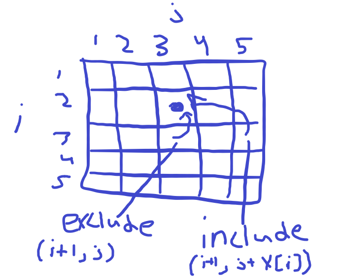

We came up with a recursive solution to this problem in an earlier homework
lcs(A[i .. n], B[j .. m]):
if length A == 0 OR length B == 0
return 0
if A[1] == B[1] {
return lcs(A[i + 1 .. n], B[j + 1 .. n]) + 1
} else {
return max(lcs(A[i + 1 .. n], B[j .. n]), lcs(A[i .. n], B[j + 1 .. n]))
}
The subproblems are lcs(i to n+1, j to n+1) where when i = n + 1 or j = m + 1 then the lcs is 0, else the lcs(i, j) is the max of lcs(i + 1, j), lcs(i, j + 1)
We can store the memozation solutions in a 2d array [i to n+1, j to m+1]
Since lcs(i, j) = max lcs(i + 1, j), lcs(i, j + 1), we must calculate lcs from n+1->1 so we have those dependencies calulated already
fastLcs(A[1 ... n], B[1 ... m]) {
lcsTable
for x = 1 in range(n + 1)
lcsTable[x, n + 1] = 0
for x = 1 in range(m + 1)
lcsTable[m+1, x] = 0
for i = length(A) + 1 to 1 {
for j = length(B) + 1 to 1 {
if A[i] == B[i] {
lcsTable[i, j] = lcsTable[i + 1, j + 1]
} else {
lcsTable[i, j] = max(lcsTable[i + 1, j], lcsTable[i, j + 1])
}
}
}
return lcsTable[1, 1]
}
i, j start at the ends of a string S then recursively increment/decrement their way until the base case of them equalling each other
palindrome(i, j) {
// in case the return palindrome(i + 1, j - 1) call causes i to be greater than j
if i > j
// this means theres 2 characters and they are equal so return 2
if S[i] == S[j]
return 2
else
reuturn 0
// one character is a palindrome of length 1
if i == j
return 1
// if characters are equal, increment sum by 2 for the 2 matching character then move i and j closer together by 1 each
if S[i] == S[j]
return palindrome(i + 1, j - 1) + 1
else
// if there not equal try both the next characters for i and j to see if they are equal
return max(palindrome(i + 1, j), palindrome(i, j - 1))
}
i > j && S[i] == S[j] 0
i > j && S[i] != S[j] 2
i == j 1
S[i] == S[j] palindrome(i + 1, j - 1) + 1
else max(palindrome(i + 1, j), palindrome(i, j - 1))
Again we can memoize this with a 2d array of [1 to n, 1 to n]
Based on this table we need to calculate 5 to 1 for i and 1 to 5 for j
palindrome(S) {
n = length(S)
p = []
for i to n
p[i, i] = 1
for i = n to 1
for j = i+1 to n
if i + 1 == j && S[i] == S[j]
p[i, j] = 2
else if S[i] == S[j]
p[i, j] = 2 + p[i + 1, j - 1]
else
p[i, j] = max(p[i + 1, j], p[i, j - 1])
}
5. Week 6 problem walrusweights
on Kattis.
(a) Develop a dynamic programming algorithm for the problem. Do this by going through the steps 1(a), 1(b), 2(a), ... listed at the beginning of the lecture 6 slides. You should, in particular, describe the recursive solution/algorithm that is the result of 1(b).
1a. Input of index i for an array X[i ... n] and the current sum. Recursively include and exclude each option in the array and return the one that returns the closest sum to the target 1000
1b. start at input walrus(1, 0) each recuresive call will follow this formula
walrus(i, sum)
if sum = 1000 return 1000
if i = length(X) return sum
else include = walrus(i + 1, sum + X[i])
exclude = walrus(i + 1, sum)
if absoluteValue(1000 - include) <= absoluteValue(1000 - exclude)
return include
else
return exclude
2a. The subproblems are walrus(i, sum) where 0 <= i <= length(X) and 0 <= sum. Sum doesn't really have a set endpoint
2b. So we need a 2d array [i, j] where i is 1 -> length(X) and j is 0 -> total sum of all values in X
2c. Each entry in the memoized array needs either the answer done for either [i + 1, sum + X[i]] or [i + 1, sum]

2d. This means we must solve the problem i = length(x) to 1 and j = sum all X to 0
2e. Kattis Solution
2f. O(i*1000) = O(i)
(b) Implement your dynamic
programming solution using your preferred language and submit your
implementation via Kattis.6. [Optional] Week 6 problem spiderman on Kattis. Submit your solution via Kattis.